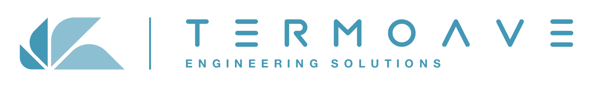
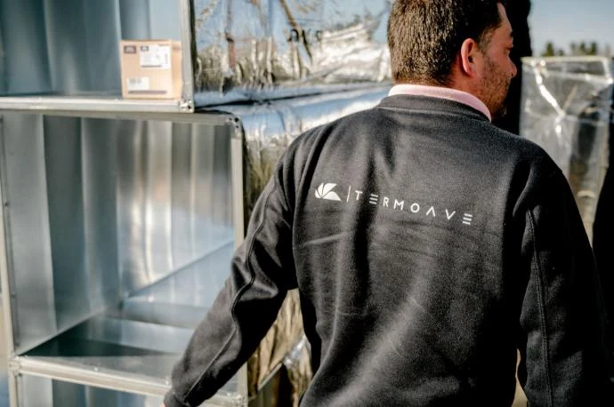
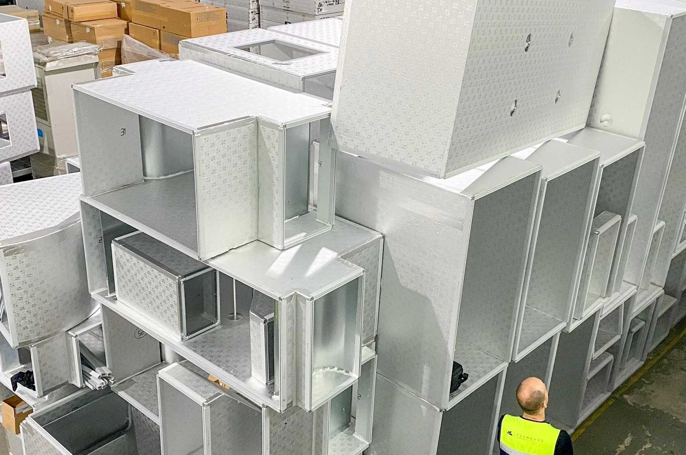
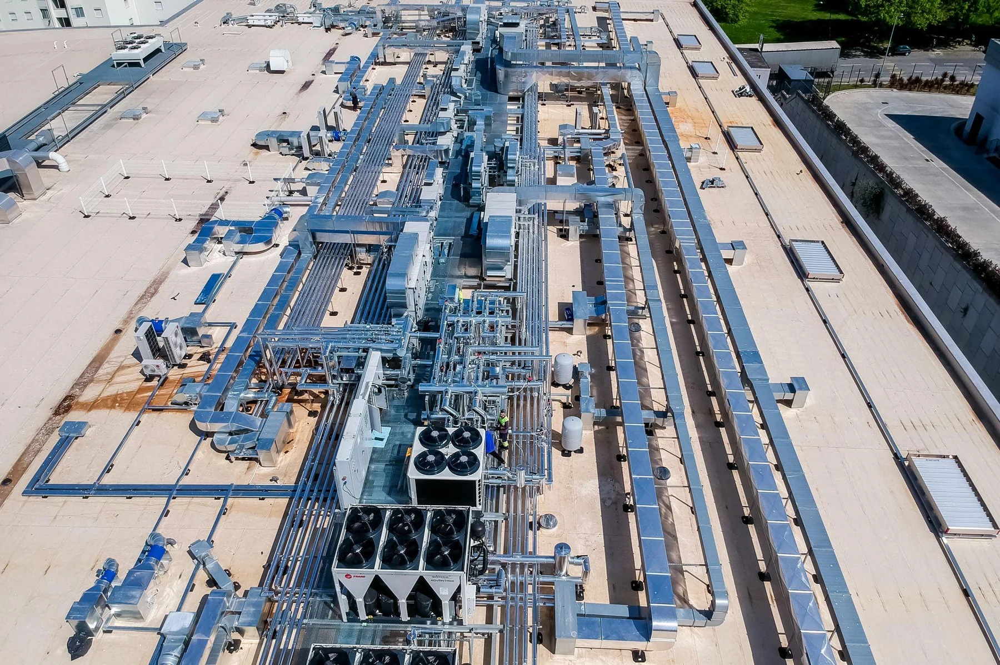
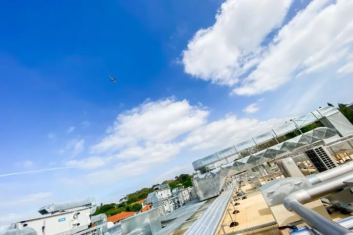

Começar pelo contexto.
O visitante escolhe o tipo de edifício que tem em mente. O resumo conserva essa informação, sem presumir que todos os serviços são adequados ao caso.

Projeto · Produção · Manutenção
Soluções de engenharia que ligam projeto, execução e acompanhamento. Explore o percurso de uma intervenção e a informação que pode preparar.
Explorar a demonstração

Uma intervenção, por etapas
O método apresentado pela Termoave liga diagnóstico, projeto, execução e acompanhamento. Explore o papel de cada etapa.
Contexto comercial
O primeiro passo é reunir contexto sobre o edifício, as necessidades e o que já existe.
Exemplos de informação a preparar. A avaliação é feita pela equipa técnica.
As escolhas mantêm o contexto e a etapa que pretende explorar, sem indicar automaticamente um serviço ou solução.
Resumo da exploração
Demonstração local. Não envia informação nem cria pedidos de assistência.
Trabalho que se pode mostrar
A página de produção descreve condutas metálicas e P3. O portefólio mostra instalações, para além da apresentação dos serviços.


Uma proposta de Ricardo Almeida
O vosso site já distingue áreas de negócio e apresenta o método diagnóstico, projeto, execução e acompanhamento. Nesta demonstração, tornei esse percurso explorável e liguei-o ao contexto comercial, industrial ou residencial.
Esta é uma demonstração independente, preparada para mostrar uma possibilidade de apresentação. O website oficial permanece a referência da empresa.
O visitante escolhe o tipo de edifício que tem em mente. O resumo conserva essa informação, sem presumir que todos os serviços são adequados ao caso.
Cada ponto do método apresenta a sua função e exemplos de informação a reunir. A navegação ajuda a perceber o que está definido e o que precisa de conversa técnica.
Usei imagens das vossas páginas de produção e portefólio. A equipa, os componentes e as instalações aproximam a explicação do trabalho que a empresa publica.
Uma filmagem a preparar convosco
Proponho filmar a equipa num trabalho autorizado, acompanhando uma etapa de fabrico de condutas ou uma intervenção numa instalação. Uma explicação curta de um técnico pode ligar o que está a fazer à função daquele componente no edifício. O trabalho, os cuidados de segurança e o que pode ser divulgado seriam definidos convosco. O filme seria novo e preparado para uma página de serviço ou de caso.
Na Canvas Custom Furniture, fiz a filmagem, a edição e a integração do filme no website. Incluí esse projeto como exemplo concreto da ligação entre conteúdo e página.
Ver o projeto Canvas